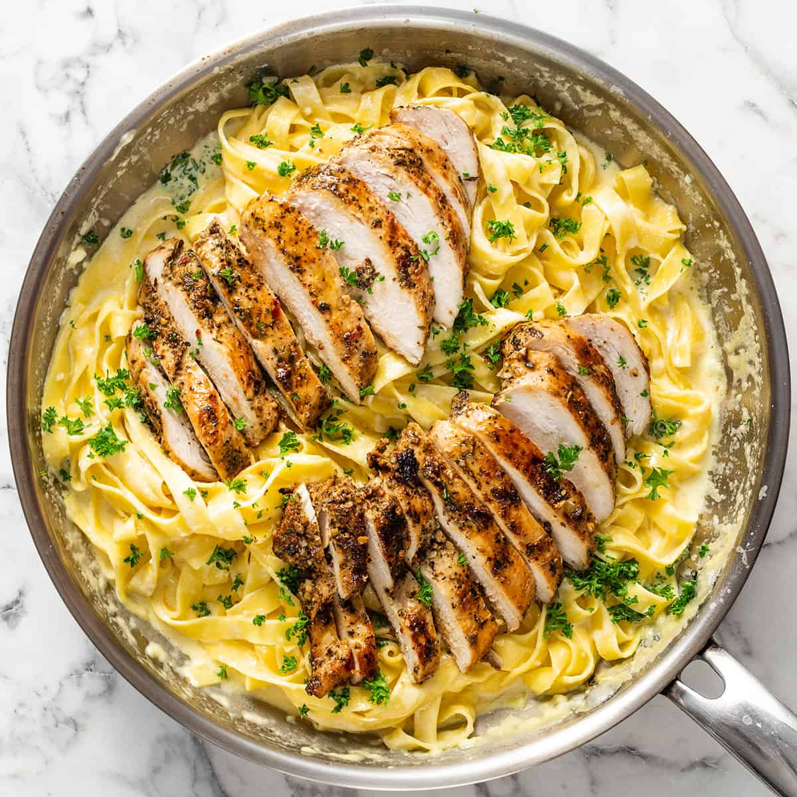

Home
Creamy Chicken Pasta

Description
This creamy chicken pasta is a quick and easy meal that is perfect for a weeknight dinner. It is made with chicken, pasta, and a creamy sauce that is flavored with garlic, parmesan cheese, and fresh herbs. The sauce is made with heavy cream, chicken broth, and butter, which gives it a rich and velvety texture. This dish is sure to become a family favorite!
Ingredients
- Chicken breast
- Pappardelle
- Chicken stock
- Garlic
- Full fat cream
- Salt & Pepper
- Lemon
Instructions
- Season the chicken breast with salt and pepper.
- Heat a large skillet over medium-high heat and add olive oil.
- Add the chicken breast and cook until golden brown on both sides.
- Remove the chicken from the skillet and set aside.
- Add the garlic to the skillet and cook until fragrant.
- Add the chicken stock and bring to a simmer.
- Add the cream and bring to a simmer.
- Add the chicken back to the skillet and cook until the sauce has thickened.
- Season with salt and pepper to taste.
- Serve the chicken and sauce over cooked pappardelle.
- Garnish with lemon zest and fresh herbs.